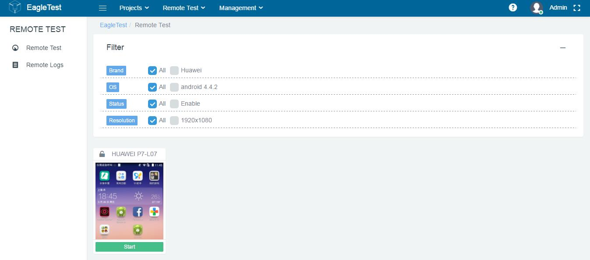

1.5 Remote Test
In remote test, the user operates the mobile through the mouse to achieve the mobile control and debugging. Users can use this to better reproduce the test steps, observe the test results, so as to more accurately track the wrong location.

Remote Test